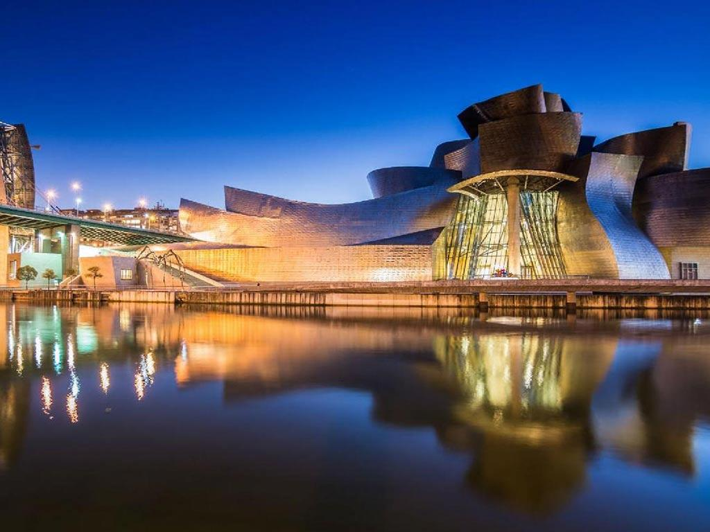
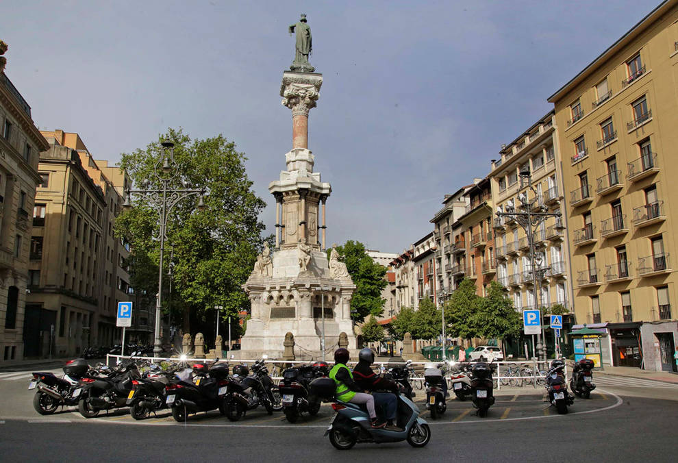
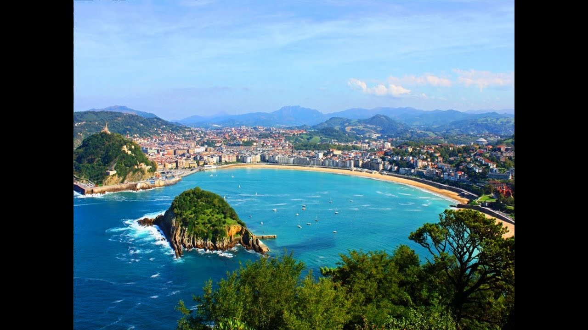
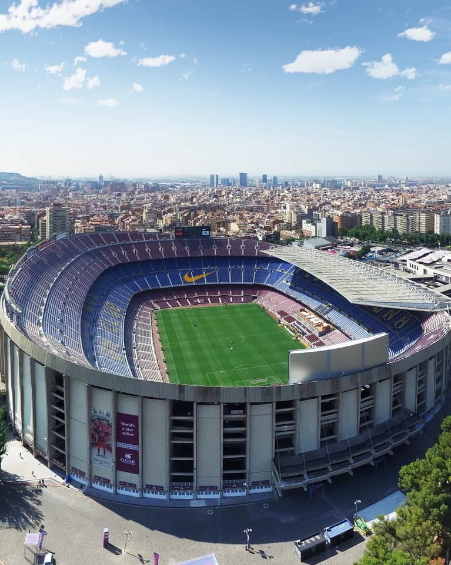
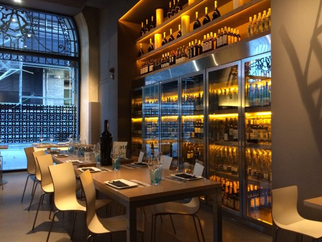

BARCELONA
Historia
Barcelona, la capital cosmopolita de la región de Cataluña en España, es conocida por su arte y arquitectura. La fantástica iglesia de la Sagrada Familia y otros hitos modernistas diseñados por Antoni Gaudí adornan la ciudad. El Museo Picasso y la Fundación Joan Miró muestran el arte moderno de los artistas que dan origen a sus nombres. El Museo de Historia de Barcelona (MUHBA) incluye varios sitios arqueológicos romanos. Las raíces medievales de Barcelona se aprecian en el laberíntico Barrio Gótico. El desbordante paseo costero central, La Rambla, está bordeado de cafés. Al norte de La Barceloneta, un barrio con una playa amplia y restaurantes de mariscos, el Parque de la Ciudadela alberga el Zoológico de Barcelona. El parque Güell es un jardín en una cima con coloridos mosaicos de Gaudí y vistas panorámicas. Un funicular se traslada hasta la cima del Montjuïc, donde la Fuente Mágica presenta espectáculos de luces y música, y el Palacio Nacional muestra arte catalán. El escenario culinario, centrado en el mercado de La Boquería, varía desde finas preparaciones hasta los bares de tapas. Se puede encontrar una animada vida nocturna en El Born y el distrito Eixample
Sitios que visitariamos
Basilica del pilar

Museo Guggenheim Bilbao
Estadio Paseo Sarasate
San sebastian - Playa de la concha
Estadio Camp Nou
Restaurantes
Pizzeria Bar Ottantotto
Passatge d'Utset, 2 | passatge tranquilo en calle Mallorca 442, 08013 Barcelona, España

Tasty Q
Passatge d'Utset, 2 | passatge tranquilo en calle Mallorca 442, 08013 Barcelona, España

Atea
Uribitarte Pasealekua, 4, 48001 Bilbao, Bizkaia,España
Itinerario
- Día 1:Ciudad de Origen - Barcelona (noche a borde)
Salida de tu ciudad de origen con destino Barcelona. - Día 2: Barcelona – Camp Nou – Park Wüell
Llegada al aeropuerto de Barcelona y traslado al hotel. Resto del día libre. Alojamiento. - Día 3: Barcelona
Desayuno. Por la mañana visita de la ciudad, recorriendo sus principales avenidas como la Plaza de Cataluña, el Paseo de Gracia, la Diagonal, la Sagrada Familia de Gaudi, el barrio Gótico con la catedral, las Ramblas y finalmente el parque de Montjuic desde donde disfrutaremos de una bella panorámica de la ciudad y su puerto. Tiempo libre. Alojamiento. - Día 4: Barcelona - Zaragoza - Pamplona
Desayuno y salida hacia Zaragoza. Tiempo libre para visitar la Basílica de la Virgen del Pilar, patrona de la Hispanidad y continuación hacia Pamplona, capital del antiguo Reino de Navarra. Tiempo libre para conocer la ciudad. Sugerimos realizar visita opcional para dar un paseo por el famoso recorrido del encierro de San Fermín y degustar los típicos “pintxos". Alojamiento. - Día 5: Pamplona - San Sebastián - Bilbao Desayuno y salida hacia San Sebastián, la bella ciudad de corte francés, conocida por la Perla del Cantábrico, con su magnífica Playa de la Concha. Tiempo libre y continuación a Bilbao. Alojamiento.